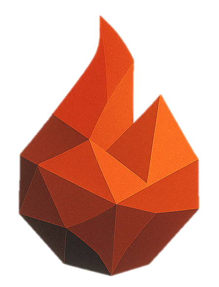

forefireSCENARIO STUDIOAT THE PLAYHEAD · UTC
Dead fuel 10% · live fuel 100%
EDITABLE FUEL TABLE ↗EXPERIMENTAL FARSITE MAPPING ↗I = H × consumed mass × ROS. Estimate from the fuel table and current node speed.
FFState saves the computed state. Inspecting a past time does not rewind the solver.
Preparing landscape